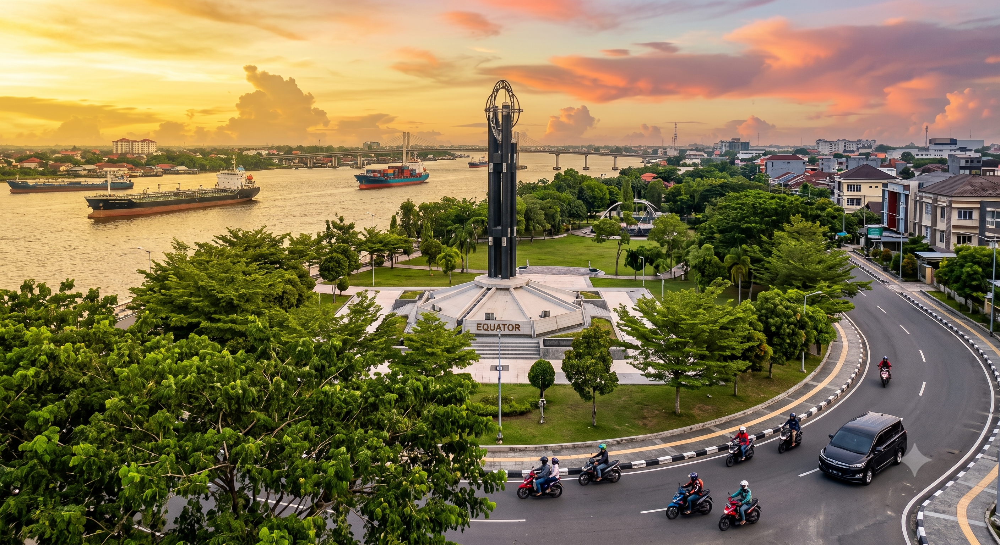
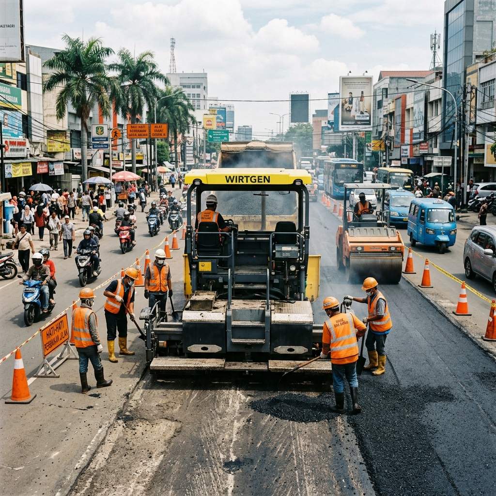
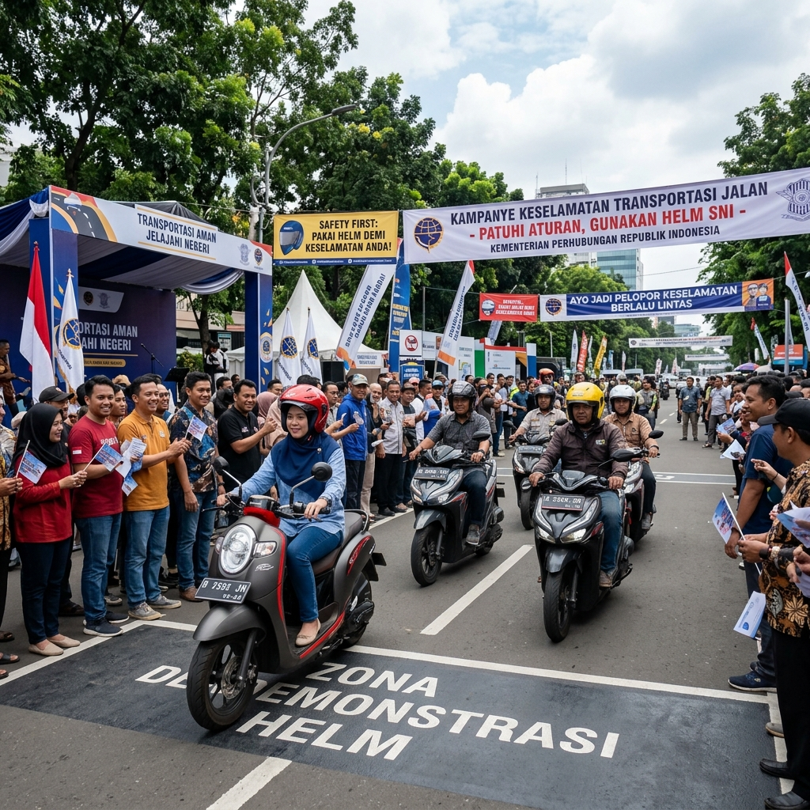

Melayani masyarakat dalam bidang perhubungan darat, laut, dan udara untuk mewujudkan transportasi yang aman, nyaman, dan terintegrasi.
24
CCTV Aktif
48
Rute Angkot
99%
Uptime
Pantau kondisi lalu lintas secara real-time di berbagai titik strategis Kota Pontianak melalui kamera CCTV kami.
Jl. Pahlawan - Jl. Gajah Mada
Jl. Ya' M. Sabran - Jembatan Landak
Jl. Tanjung Raya I - Jembatan Kapuas I
Bundaran Digulis - Jl. Jend. Ahmad Yani
Depan SPBU Imam Bonjol
Jl. Jend. Ahmad Yani (Simpang Pajak)
Berbagai layanan publik yang tersedia untuk memenuhi kebutuhan masyarakat di bidang transportasi dan perhubungan.
Pengujian kelayakan kendaraan bermotor secara berkala sesuai standar keselamatan.
Pengurusan izin trayek angkutan umum untuk operator transportasi kota.
Pengelolaan parkir dan retribusi parkir tepi jalan umum dan tempat khusus.
Informasi rute, jadwal, dan regulasi angkutan umum dalam kota.
Pemasangan dan pemeliharaan rambu lalu lintas dan marka jalan.
Pengelolaan pelabuhan sungai dan penyeberangan di wilayah Kota Pontianak.
Sampaikan keluhan dan aspirasi terkait layanan perhubungan kota.
Alat Pemberi Isyarat Lalu Lintas (traffic light) dan pengelolaannya.
Ikuti perkembangan terbaru seputar kegiatan dan program Dinas Perhubungan Kota Pontianak.
Kepala Dinas Perhubungan Kota Pontianak memimpin rapat koordinasi bersama jajaran terkait untuk membahas strategi peningkatan keselamatan transportasi di wilayah kota.


Data terkini terkait kinerja dan layanan Dinas Perhubungan Kota Pontianak.
0
Pengunjung Website
+12.5% bulan ini
0
Kendaraan Uji KIR
Tahun 2026
0
Izin Trayek Aktif
Total aktif
0
Titik CCTV
Semua aktif
6 bulan terakhir
Pengunjung aktif real-time
Pengunjung Online
Kewajiban dan tanggung jawab regulatori Dinas Perhubungan di wilayah Kota Pontianak.
Dinas Perhubungan Kota Pontianak mempunyai tugas pokok melaksanakan urusan pemerintahan daerah berdasarkan asas otonomi dan tugas pembantuan di bidang perhubungan darat dan perairan (sungai) sesuai dengan kebijakan dan peraturan perundang-undangan yang berlaku.
Berdasarkan Peraturan Walikota Pontianak tentang Kedudukan, Susunan Organisasi, Tugas dan Fungsi Dinas Perhubungan.
Dinas Perhubungan Kota Pontianak berkomitmen untuk menyediakan layanan transportasi yang aman, nyaman, terjangkau, dan berkelanjutan bagi seluruh masyarakat Kota Pontianak.
Meningkatkan keselamatan dan keamanan pengguna jalan raya.
Mengintegrasikan seluruh moda transportasi darat dan sungai.
Mendorong penggunaan transportasi ramah lingkungan.
Kota Pontianak
"Kami terus berupaya meningkatkan kualitas pelayanan perhubungan untuk mendukung pertumbuhan ekonomi dan kesejahteraan masyarakat Kota Pontianak."
6
Bidang
156
Pegawai
24/7
Layanan
Hubungi kami untuk pertanyaan, pengaduan, atau informasi seputar layanan perhubungan.
Jl. Alianyang No. 7,
Kec. Pontianak Kota,
Kota Pontianak, Kalimantan Barat 78121
Telp: (0561) 734-567
Fax: (0561) 734-568
dishub@pontianak.go.id
Senin - Jumat: 07:30 - 16:00 WIB
Sabtu - Minggu: Tutup